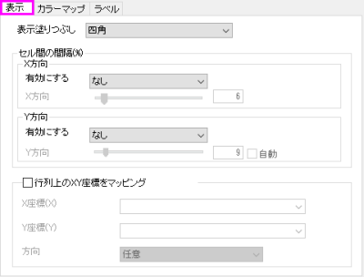
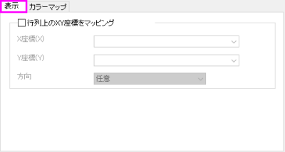

このタブを使用して、ワークシートデータまたは行列データから作図されたヒートマップ/極ヒートマップ図の塗りつぶし色、表示スタイル、X/Y座標、X/Y方向のセル間隔を制御できます。
| ヒートマップ |
極座標ヒートマップ |
|  |
 |
セルの塗り色を指定します。カラーオプションは、インデックス、RGB直接、マップの3つです。
デフォルトではMap:Mat(#):"###"が選択されており、カラーマップタブで、塗りつぶしの色やセルの境界線などをコントロールできます。
インデックスまたはRGB直接を選択した場合、 カラーマップタブは表示されませんが、境界線と透明度コントロールが表示され、塗りつぶしたセルの境界線と透明度をカスタマイズできます。
四角、上三角、対角線のない上三角、下三角、 対角線のない下三角の5つから選択します。この設定は極座標ヒートマップでは使用できません。
| Note:
ヒートマップのXおよびYがN*Nでない場合、上三角、対角線のない上三角、下三角、対角線のない下三角の4つの表示方法は使用できません。 |
このコントロールグループを使用して、セル間の間隔を調整できます。この設定は極座標ヒートマップでは使用できません。
X方向またはY方向の各セル（最後のセルを除く）の後に間隔を追加できるほか、任意の N個ごと、N番目のセルの後、列またはラベル行で指定されたセルの後に間隔を追加することも可能です。
ドロップダウンリストの下の選択がどのように機能するかについては、以下の例を参照してください。
X方向およびY方向のスライダーは、それぞれの方向におけるセル間ギャップの幅を0～100のスケールで調整するために使用します。Y方向のスライダーの後ろにある自動チェックボックスをオンにすると、Y方向のギャップがX方向と同じ値に自動設定されます。
このオプションはNetCDFデータをプロットしたヒートマップで使用され、経度と緯度を設定します。
行列からのX/Y座標の設定をサポートします。
任意、時計回り、反時計回りから方向を指定します。